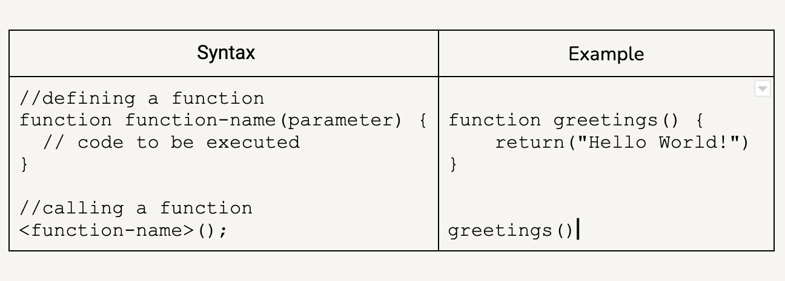

An analogy to describe the differences between HTML and CSS
HTML is like the bricks and glue that a builder uses to build a house. CSS is the plans made by the architect that
guide the construction process. They specify how wide and high the house will be, how many rooms it will have,
where each room will be located, the distance between each door and window, the floor, ceiling and wall materials
and colors, etc. Without the design, you just have a very basic and ugly cube that can serve as shelter but no one
would be proud to live in it. Now what's the point of a pretty house if it isn't functional? You love your beautiful
kitchen but you want it for cooking, not just to stare at it. Your hose needs power. That is what Javascript is, it is
your house's power. It is the lights switching on, the remote opening the garage door, your kitchen appliences working.
Javascript makes it posible to interact with your page.
Explain control flow and loops using an example process from everyday life
Control flow in JavaScript is how the computer runs code. It starts from the first line at the top and ends at the
last line at the bottom, unless it hits a statement that changes the normal flow. One of these statements can be a
loop.
Loops are iteration statements - repetitions of a process - that will keep running until they meet a
requirement that makes them stop.
Think about mopping the floor. You start from one end of the room and make
your way to the other end using the same moves. But in the middle of this process you encounter a dried stain of
peanut butter. You wouldn't just pass the mop over it once and keep on going. No. If you are a person that cares for
cleanliness you would repeat your mopping movements on the nasty little stain over and over again until it's gone.
Then you would proceed with the rest of the room. In other words, you would loop the peanut butter stain until you
have nothing else to loop in. In a Javascript, the loop's condition to stop looping is usually reaching a predetermined
value.
Describe what the DOM is and an example of how you might interact with it.
The DOM is a representation of how the browser reads and interacts with your code (HTML and CSS). Everything in the
DOM, every tag, element, attribute, etc., is interpreted as a node. The DOM connects these nodes, forming what looks
like tree branches. These formations create different kinds of relationships between the nodes, where nodes are parents,
children and siblings in relation to other nodes.
You can navigate the DOM and access its different nodes using various techniques. One of them is getElementById().
Since IDs are required to be unique, this method returns one element whose id property matches the specified id in the string.
So it's a very efficient method to find elements.
If we type document.getElementById(“id-name”) the browser
will run through all the code until it finds its match. Once we have the element we can manipulate it however we want. One way to do
this is with the innerHTML property. This property allows us to change the HTML content of an element with the id specified
in the getElementBtId method. In the example below we add the text “Agatha Christie” to the div with the id Author.
Explain the difference between accessing data from arrays and objects.
Objects and arrays are special types of data. Objects are used to represent a “thing” that has a set of characteristics. That thing could be
potentially anything - a person, a book, a movie, a lamp, etc. The characteristics of an object are called properties and they consist of a
key and a value. An object can have as many properties as needed.
We access the properties of an object through its keys. We can do that in two ways: calling the object key with a dot, or putting the key
inside square brackets and in quotation marks.
Arrays are a type of variables that store a list of values in an ordered sequence. These values are organized by their position in the array.
Each value has an index that signals its position. The index starts at 0. That means that if my array has 10 values, the index of the last
value is 9.
We access the values of an array by calling the array with the index of the value we want to access inside square brackets. Following our
previous example, if I want to know who is the 3rd person in the guest list I will call the array with the corresponding index, in this case,
guests[2] and that will give me the value Lou.
Explain what functions are and why they are helpful.
In Javascript a function is a block of code intended to do a particular task. Functions take an input (a set of statements), and return an output (a result). Functions are an essential part of coding as they can perform highly complex tasks when they are triggered.
In order to use a function you need to define (declare) it first. You define a function by using the keyword function followed by the name the function will take, a parameter enclosed in parenthesis (the parameter can be one value or a list of values separated by a comma, or it can even be empty), and finally the statements enclosed in curly brackets.
Once your function is defined you can execute it as many times as you want by calling it back whenever you need it.
